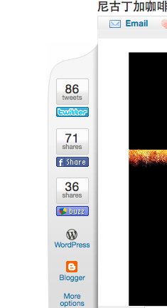
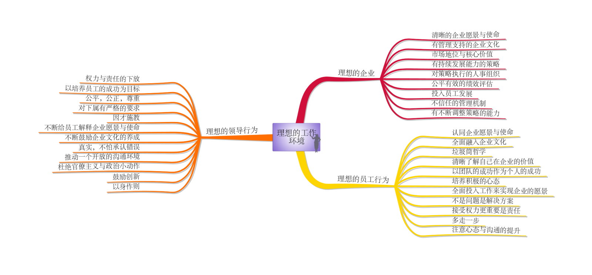

我上学时看周润发版的《上海滩》，里面有情节是丁力去看喜欢的女人，拿着白菊花。开门的佣人接过花，背后说：“呸，大清早送菊花”。那时我不懂花语，没明白。工作后才明白。今天看到还真有实例，乐翻鸟。林总，您真能拿自己开涮。@林正刚企业运营:刚刚LP提醒我当年我第一次上门拜见岳父岳母的时候，身穿白色西服，眼镜紫红色的，手拿黄色菊花，十分震撼：））
”如果要轻松做人，最好不要太当自己一回事“，正解。但也别走到另一个极端，太不把自己当回事。@林正刚企业运营:收到很多EQ八项注意的反馈，有很多朋友都选了“冷静与轻松”，我自己觉得当你能保持一个“无欲则刚”的心态，那面对得失，可能会比较能够冷静，如果要轻松做人，最好不要太当自己一回事，大家认为怎样：）
这个比喻好，以前我用的比喻是老鹰捉小鸡游戏，母鸡动一步，后面的小鸡要动好几步，越靠后的跑得越多，最尾的小鸡最辛苦，经常会被甩出去。@林正刚企业运营:大齿轮与小齿轮的关系。作为企业领导，就像一个大齿轮，大齿轮小动一下，作为小齿轮的企业员工就要飞快的转，所以领导说话要小心，负责任，不要一分钟一个主意，不然企业的员工会晕死：）
自认为是心态积极的人，但有次被人批评消极，是因为对某事，我说了很多不能做的理由。后来反思，原因是那件事情，我不想去做。如果是想做的事情，我能找出上百个可以做的理由。但工作上的事情，似乎没有想做和不想做的选择，所以，有时候就要说服自己，把原本不想做的事情，通通想像成自己喜欢做的。
让人崩溃的分享方式，总共提供五个，Facebook, Twitter, Google Buzz, WordPress, Blogger, 四个国内访问不了，剩下的Google Buzz访问总会出点故障。 
非常同意。有个统计数字表明，离职原因大多数是与直接经理有关。@林正刚企业运营:“理想的工作环境”这个题目我讲了很多次了，因为题目很大，所以每次内容都稍微不一样，这个脑图是这个题目修改过的大纲，给大家参考一下：） 
冷血和激情，蛮难调和的。内心冷血，外表激情？这解释很俗套哈。一时也难说清楚，靠自己体会了。 //@刘松--甲骨文:上次说了，唯有冷血才能保持长久的激情，尤其对自己的惰性 //@Ada李力: ”如果要轻松做人，最好不要太当自己一回事“，正解。但也别走到另一个极端，太不把自己当回事。@林正刚企业运营:收到很多EQ八项注意的反馈，有很多朋友都选了“冷静与轻松”，我自己觉得当你能保持一个“无欲则刚”的心态，那面对得失，可能会比较能够冷静，如果要轻松做人，最好不要太当自己一回事，大家认为怎样：）
今天姣姣有演出。昨晚现去给她买靴子，挑的时候分歧大了，我要选黑色的，姣姣和明俊都要选那种粉嫩粉嫩，花里胡哨，blingbling的，明俊还把问题上升到对我的服装品味进行置疑。气得我声明，以后给姣姣买衣服，不再拉上明俊。我以为对服装的分歧只会发生在两口子之间呢，现在还要拉上下一代了。